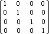

title: glLoadIdentity function (Gl.h) description: The glLoadIdentity function replaces the current matrix with the identity matrix. ms.assetid: 59273aa9-4db3-4c8c-8364-f54c03d2f97a keywords:
The glLoadIdentity function replaces the current matrix with the identity matrix.
void WINAPI glLoadIdentity(void);
This function has no parameters.
This function does not return a value.
The following error code can be retrieved by the glGetError function.
| Name | Meaning |
|---|---|
| GL_INVALID_OPERATION | The function was called between a call to glBegin and the corresponding call to glEnd. |
The glLoadIdentity function replaces the current matrix with the identity matrix. It is semantically equivalent to calling glLoadMatrix with the following identity matrix.

However, in some cases, it is more efficient.
The following functions retrieve information related to glLoadIdentity:
glGet with argument GL_MATRIX_MODE
glGet with argument GL_MODELVIEW_MATRIX
glGet with argument GL_PROJECTION_MATRIX
glGet with argument GL_TEXTURE_MATRIX
| Requirement | Value |
|---|---|
| Minimum supported client | Windows 2000 Professional [desktop apps only] |
| Minimum supported server | Windows 2000 Server [desktop apps only] |
| Header | Gl.h |
| Library | Opengl32.lib |
| DLL | Opengl32.dll |